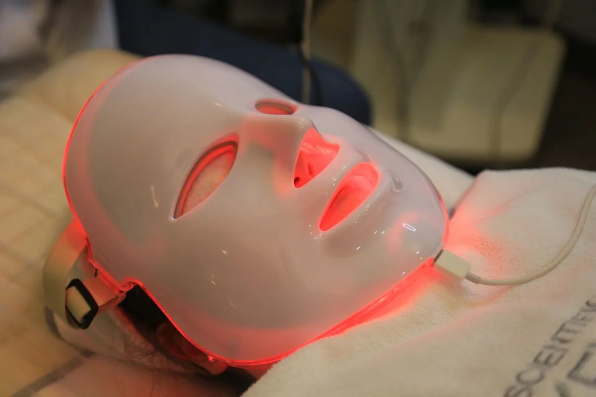
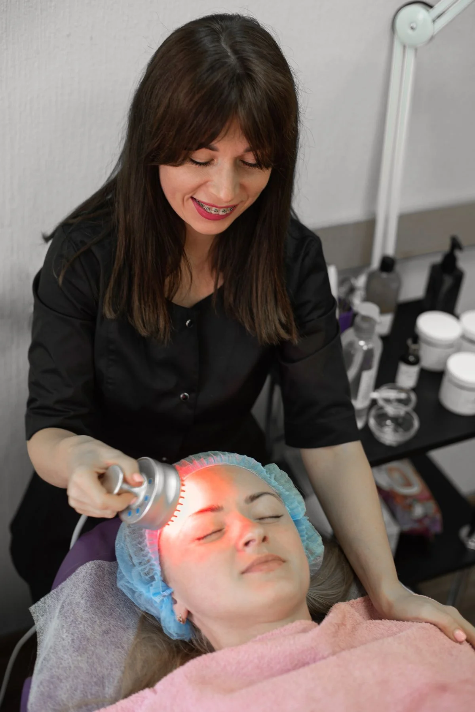

Red Light Therapy Panels: What Actually Matters Before You Buy
What should I check before buying a red light therapy panel?
Check four things before you buy: the wavelengths (most panels use 660nm red and 850nm near-infrared), the area one session covers, the irradiance at the distance you will actually stand, and where the panel will live — a full-body panel needs a door, wall or stand. Bigger is not automatically better: a foldable close-range panel can suit a small room better than a heavy wall panel. Verify each point on the manufacturer's own page before you buy.
Our pick: MitoPRO 1500+ — the manufacturer's most popular full-body panel: 300 LEDs, four wavelengths (630, 660, 830 and 850nm) and the highest listed irradiance at 6 inches of any panel in this guide.
Check price on AmazonAffiliate link to be added after approval. No price shown here — check it on Amazon.
At a glance
| Product | Best for | Check price |
|---|---|---|
| MitoPRO 1500+ | Best overall full-body panel | Link pending |
| Hooga HG1500 | Full-body coverage, simple controls | Link pending |
| Joovv Solo 3.0 | A modular panel you can expand later | Link pending |
| TrueLight Energy Trism | Foldable full-body panel that travels | Link pending |

We may earn a commission if you buy through links on this page. As an Amazon Associate I earn from qualifying purchases.
What you need
Four panels our research verified on the manufacturers' own pages on 11 November 2026. No prices here on purpose — check the price on Amazon, and check the size and mounting against the room where the panel will live.
MitoPRO 1500+
Mito Red Light's most popular full-body panel: 300 LEDs, 375W, and four wavelengths (630, 660, 830 and 850nm) split equally. The manufacturer lists irradiance above 170 mW/cm² at 6 inches on its lab measure. Red-only, near-infrared-only or combined modes, and goggles are included in the box.
Watch out: Mito's own page gives two different sizes for this panel (13"×47" in its FAQ, 12"×36" in its compare table), so confirm the size before you buy. A floor stand is sold separately.
Check price on AmazonAffiliate link to be added after approval. No price shown here — check it on Amazon.
Hooga HG1500
Hooga's full-body panel: 300 single-chip 5W LEDs at 660nm red and 850nm near-infrared, with a listed irradiance of 115 mW/cm² at 6 inches. A door mount and hanging kit with an adjustable pulley are included, and it has separate red and near-infrared switches. Backed by a 3-year warranty and 60-day returns.
Watch out: It weighs 33 lb, so it needs a solid door or wall mount — check where it will hang before you buy. It is a simple two-wavelength panel with no brightness or pulsing controls.
Check price on AmazonAffiliate link to be added after approval. No price shown here — check it on Amazon.
Joovv Solo 3.0
Joovv's single-device panel for moderate-area treatments: 660nm red and 850nm near-infrared light, a 9"×36" coverage area, and a modular design that expands into larger setups. It has Recovery+ and Ambient modes, app control, and protective eyewear is included. Joovv describes it as a Class II medical device.
Watch out: Joovv does not publish an LED count or a single irradiance figure on the Solo 3.0 product page, so compare it on coverage and modes rather than a headline power number. Mounting accessories are sold separately.
Check price on AmazonAffiliate link to be added after approval. No price shown here — check it on Amazon.
TrueLight Energy Trism
A full-body panel that folds: three 12-inch panels give a 36"×12" light surface, then fold down to 12"×12"×1.25" for travel. Every LED emits all four wavelengths (580, 630, 660 and 850nm), with steady and pulsing modes, a built-in 20-minute timer, no fans, and a 1-year warranty plus a 60-day money-back guarantee.
Watch out: TrueLight designs this panel for close-range use and lists only 4.2 mW/cm² at 6 inches — far lower than the big wall panels. It is a close-range, foldable panel, not a high-irradiance wall panel, so follow its 3-to-6-inch session guidance.
Check price on AmazonAffiliate link to be added after approval. No price shown here — check it on Amazon.
How to pick a panel
- Decide what area you need to cover. A small panel treats one spot at a time and means repositioning. A full-body panel treats more at once but needs a door, wall or stand to live on.
- Check the wavelengths. Most panels use 660nm red and 850nm near-infrared. The MitoPRO 1500+ adds 630nm and 830nm; the TrueLight Trism adds 580nm yellow. More wavelengths is not automatically better — Joovv sticks to two on purpose.
- Check irradiance at your real distance. Manufacturers measure at 6 inches, and the number falls fast as you move back. Compare figures measured the same way, at the same distance, and beware of a single big number with no distance attached.
- Plan where it lives and how it mounts. Check the weight, the size, and whether the mount is included or sold separately. The Hooga HG1500 is 33 lb with a mount included; the MitoPRO 1500+ floor stand is an extra.

Photos still needed
No real at-home photos of the actual panels in this guide exist yet. Still missing — needs real at-home photos of the actual models:
- A full-body panel hanging on a door, with the mount visible
- A panel in use at home, showing the distance a person stands from it
- The TrueLight Trism folded flat next to a suitcase, for scale
- Real test photos of the panels in this guide, taken at home
Comparison
| Product | Best for | What to check before you buy | Watch out for |
|---|---|---|---|
| MitoPRO 1500+ | Best overall full-body panel | 300 LEDs, 375W, four wavelengths (630, 660, 830, 850nm), irradiance at 6 inches | Two different sizes listed on Mito's own page — confirm before you buy; stand sold separately |
| Hooga HG1500 | Full-body coverage, simple controls | 300 LEDs, 660 + 850nm, 115 mW/cm² at 6 inches, mount included | 33 lb — needs a solid mount; no brightness or pulsing controls |
| Joovv Solo 3.0 | A modular panel you can expand later | 660 + 850nm, 9"×36" coverage, Recovery+ and Ambient modes, app control | No LED count or single irradiance figure published on the product page; mounts sold separately |
| TrueLight Energy Trism | Foldable full-body panel that travels | Four wavelengths in every LED (580, 630, 660, 850nm), 36"×12" surface, folds to 12"×12"×1.25" | Low power density (4.2 mW/cm² at 6 inches) — close-range use only, 3 to 6 inches |
How we picked
These products come from HomeTryout research of 11 November 2026 on red light therapy. They were NOT part of the original 25-product score set across the four test areas. Specs come from the manufacturers' own pages, listed in Sources below. A fifth panel researched the same day, the PlatinumLED BIO 600, is not in this guide: we could not verify it on the manufacturer's own product page, and third-party sources disagreed on its specs.
| Products scored in our research | Products in this guide | Hands-on tests run |
|---|---|---|
| 25 (original four-area set) + 5 red light products researched 11 Nov 2026 | 4 | 0 — none yet |
What we have not done yet: no product in this guide has been tested hands-on by us. When we test one at home, this box will say so, with the date.
Troubleshooting
The near-infrared LEDs look dark even when the panel is on
Near-infrared light at 850nm is invisible to the human eye, so half the LEDs on a red and near-infrared panel can look dark while they are running. Check the panel's switches or remote: most panels let you run red only, near-infrared only, or both together.
Sessions feel like they do nothing
Red light therapy rewards consistency over weeks, not single sessions. TrueLight notes that skin changes show over weeks to a few months of regular use. Keep the same distance, time and routine for a few weeks before judging it, and check the manufacturer's session guidance first.
The panel is bright enough to be uncomfortable to look at
Do not stare directly into the LEDs. Joovv says eye protection should be used when near-infrared mode is on, and Mito Red Light includes goggles with every MitoPRO+ panel. If your panel did not include eyewear, check the manufacturer's guidance before your next session.
Frequently asked questions
How far should I stand from a red light therapy panel?
Most manufacturers suggest 6 to 18 inches from the panel. Mito Red Light suggests 6 to 18 inches with 10-minute sessions per area, and TrueLight suggests 3 to 6 inches for about 20 minutes. Follow the guidance on the panel you buy, and do not stare directly into the LEDs.
Do I need eye protection?
Joovv includes eyewear with the Solo 3.0 and says eye protection should be used when near-infrared mode is on. Mito Red Light includes goggles with every MitoPRO+ panel. If a panel does not include eyewear, check the manufacturer's guidance before your first session.
Can I use red light therapy every day?
Mito Red Light suggests 10-minute sessions 4 to 6 times a week, with one day off. TrueLight suggests 3 to 5 times a week, never more than once per area per day. Start shorter than the maximum and build up over the first week.
Sources
- Mito Red Light — MitoPRO+ series product page (MitoPRO 1500+: 300 LEDs, 375W, wavelengths 630/660/830/850nm, 3-year warranty, session guidance): https://mitoredlight.com/products/mitopro-series
- Hooga — HG1500 product page (300 LEDs, 660 + 850nm, 115 mW/cm² at 6 inches, 35.8"×11", 33 lb, 3-year warranty): https://hoogahealth.com/products/hg1500-red-light-therapy-device
- Joovv — Joovv Solo 3.0 product page (660 + 850nm, 9"×36" coverage, modular design, Class II medical device): https://joovv.com/products/joovv-solo-3-0
- Joovv — Generation 3.0 differences (Recovery+ and Ambient modes, up to 75W, eyewear included): https://joovv.com/blogs/joovv-blog/joovvs-next-generation-difference
- TrueLight — Energy Trism product page (four wavelengths 580/630/660/850nm, 36"×12" light surface, folds to 12"×12"×1.25", 110W, 20-minute timer, 1-year warranty): https://www.shoptruelight.com/products/truelight-energy-trism
- PlatinumLED — Platinum Therapy Lights sizing guide (BIO 600 irradiance and wavelength options; no product page on platinumled.com could be verified, so this panel is not in the guide): https://platinumtherapylights.com/blogs/news/which-size-red-light-therapy-panel
Keep going
 Prep & Power
Prep & PowerPortable Power Stations for a 72-Hour Home Kit: What Actually Matters Before You Buy
What actually matters when buying a portable power station for a 72-hour home kit: size, recharge, and what must stay on.
Read the guide → Kitchen & Cleaning
Kitchen & CleaningRobot Vacuum and Mop, Tested in a Real Home: What to Check Before You Buy
What to check before you buy a robot vacuum and mop: thresholds, pet hair, mop contact, and noise.
Read the guide → Home Fitness
Home FitnessWalking Pads for Small Spaces: Quiet, Foldable, and Actually Usable in an Apartment?
Are walking pads quiet, foldable and actually usable in an apartment? What to check before you buy.
Read the guide →